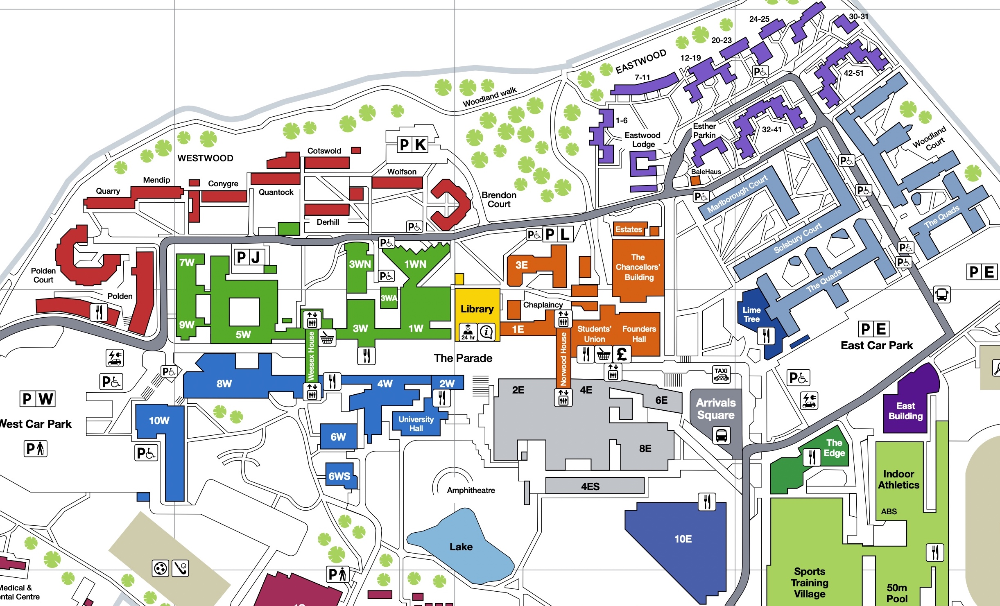

Published 14 May 2022
Welcome to the Thai Society accommodation blogs! Here we have put together short reviews of each of the University of Bath accommodations from some of the ThaiSoc members to help you choose your accommodation.
These are accommodation owned and managed by the university (the alternative being one privately owned), I would personally recommend staying in these accommodations for your first year as it allows you to connect with other first year students (as most of them would also stay there).
The University of Bath is a campus university, meaning that it's situated on a standalone campus outside the city centre. On-campus accommodations are, as the name suggests, accommodations that are situated right on campus. This allows you to walk to and from your lectures within less than 10 minutes. However, it does also mean that you have to take a rather long walk or a bus ride to get into the city centre. Here's a campus map for reference.
When it comes to on-campus accommodation, the university is split into two zones: the west accommodations (shown in red), and the east accommodations (shown in light-blue and purple). Which side of the campus you wish to stay may depend on where your department is located, but as the campus isn't too large, it does not really matter much when walking to class. You can read how each of us thinks about our accommodations' locations in our blogs
There are also a few more accommodations on campus that we aren't able to review as no one from the Thai Society currently lives there.
These are university-managed accommodations in the city. This is a great option for those who don't mind commuting daily as they're likely less in-demand and allows you to be closer to the amenities in the city centre like shops and restaurants. The bus ride from the city centre usually take 15 minutes, and wait times can range from less than 10-15 minutes on weekdays and 30 minutes on weekends (if you happen to need to get to the university on the weekend). Below is the map of the accommodations (in blue), the main campus (in red) and the virgil building (in dark red).
There are also a few more accommodations in the city that we aren't able to review as no one from the Thai Society currently lives there.
Your other option is to stay at private student accommodations. These are off-campus accommodations aimed at students, but aren't managed by the university. These are usually more expensive, but provides a wider range of choices of room types and guarantees you your room once you've paid (unlike the university where you get assigned an accommodation). Most people who live in private accommodation are postgraduates and second year or above. Here is the map of well-known student accommodations in the area.
There are also a few more private accommodations that we aren't able to review.
Pakkapol Lailert (Book)
MComp Computer Science (Year 1)
2022-2023 Thai Society Secretary
Current Accommodation: Twerton Mill